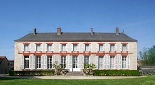
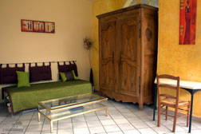
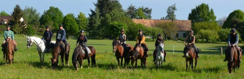

Le Manoir de la Courbette
Créé en 1972, le centre équestre La Courbette réuni 4 générations de passionnés, amoureux des chevaux.
Georges Fernet, (1884-1924) Directeur des Haras aura 7 enfants dont
Christian Fernet(1914-2003), officier de cavalerie,
qui décidera de créer en 1972
Le Centre Équestre La Courbette dans le
parc du Manoir familial.
lire la suite
Ecole Française d'Equitation
Centre équestre La Courbette vous accueille toute l'année pour pratiquer l'équitation dans un
site exceptionnel.
Pour découvrir l'équitation, remettre le pied à l'étrier après une
interruption, profiter du bonheur d'aller à cheval en forêt, randonner
plusieurs jours....
Vous perfectionner, passer les Galops, Pratiquer la
compétition avec nos chevaux de club ou votre cheval... Nos moniteurs
diplômés sont à votre écoute, à votre service!
Pension pour chevaux de propriétaire - Pension et/ ou 1/2 pension sur nos chevaux de
club pour la compétition et/ou le loisirs
Lire la suite
Le Poney Club
Le Poney club La Courbette dispose de 2 manèges qui lui sont exclusivement réservé permettant une pratique confortable par tous les temps.
Equifun, pony-games, voltige, balades, reprises initiation et découverte, perfectionnement, compétition ...
Découvrir et pratiquer la compétition avec nos poneys de club ou votre poney...
Nos moniteurs diplômés sont à votre écoute, à votre service!
Pension pour poney de propriétaire - 1/2 pension sur nos poneys de club pour le plaisir et /
ou la compétition.
Lire la suite

Le gite de charme La Courbette
La Courbette vous accueille dans un gîte de caractère, à 35 Km de Paris, au
cœur de la vallée de L'Essonne, dans le village de Boissy Sous St-Yon.
Situé dans les communs du Manoir familial du XVIIème Siècle, vous pourrez à loisirs
pratiquer, sur place l'équitation, le Tennis (2courts), profiter de la magnifique forêt de
Boissy. D'une conception moderne et confortable, le Gîte de La Courbette est équipé pour recevoir 20
personnes: randonneurs, familles, classes vertes, centre de loisirs, comité d'entreprise...
Lire la suite

Recommencer à monter à cheval ! C'est facile...
L'équitation, c'est comme le vélo: ça ne s'oublie pas. Encore faut-il faire le point de vos envies, vos attentes et vos motivations.
L'idéal est de reprendre les bases dans de bonnes conditions. A La Courbette, nos moniteurs sont attentifs et nos chevaux parfaitement dressés.
Dans une ambiance conviviale et sécurisée, renouez avec le plaisir de monter à cheval. Lire la suite